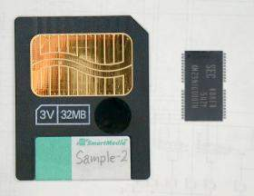

About SmartMedia
1999. 9. 29

SmartMedia is a kind of memory card that packed NAND-type flash memory into thin plastic card. So it is simple and most inexpensive in the kind of memory cards.
NAND-type is an architecture on the flash memory that being advanced by Toshiba. So the SmartMedia is a standerd that produced in order to sells flash memory of their product. (any kind of memory cards also). It seems NAND flash memory is manufactured by Toshiba and Samsung now.
Basic concept and Compatibility

SmartMedia doesn't have a microcontroller. It is different conclusively from any kind of memoly card on the basic concept. Thus SmartMedia is made by only packing memory chip into a card, and its contact terminals are same signal as memory chip. Data sheet of the NAND flash says which is package type, TSOP or SmartMedia, by only suffix of the part name. (Left image from data sheet of Toshiba TC58V64 NAND flash). Therefore, excluding a controller from memory card is a factor of reducing cost.
However, it occured a big problem on the compatibility because using only a memory chip as removable and general purpose media. Changing specifications of the memory chip affects the compatibility on the applications. These problems are as follows.
- 2MB/4MB
At the 4MB media, its page size was changed from 256 bytes to 512 bytes. But this change didn't cause a problem because there ware both type of media from start.
- 8MB
Operating voltage is changed from 5V to only 3.3V. Many systems could not use 8MB media by hardware spec did not match to 3.3V operation.
- 16MB
Block size (minimum page unit at erase operation) is changed from 16 pages to 32 pages. At the time, many systems could not use 16MB media, too. SmartMedia group was criticized for occureing problems of compatibility again and again.
- 32MB
Any specs are not changed. But some systems could not use.
- 64MB
It is started to ship just now (Sep.1999). Address phase is changed from three cycles to four cycles because address field is insufficient to point all range of the address. And logical format is changed from FAT16 to FAT12, too. Many systems will not able to use 64MB media.
Thus any probrems occured when larger media was shipped. However, it is not that problem cannot use a medium that spec-sheet doesn't say. But most of users don't think so.
NAND-type Flash Memory
NAND flash doesn't have any address input. There are only an I/O port in 8 bits width and several control signals, and using them to issue commands and addresses, to access the data in unit of page. This ransfer protocol is more like hard disk than memory.
The memory cell array is partitioned in 518 bytes of page. The memory chip has a page size of read/write buffer to transfer page data between the buffer and memory cell array by read/write commands. This buffer can be read/written from data I/O port.
At the erase operation, it is executed in 16 or 32 pages unit called blocks. If erase oparation could work in a page, it will better. This is affected by architecture of the memory cell.
NAND flash is very fast to transfer the data, transfering page data from memory cell to read/write buffer is executed in several microseconds, and it can be read out from the buffer in 50ns of cycle time, so medium tranfer rate is 15MB/sec(ave). But actual transfer rate slow down about 1MB/sec when using as SmartMedia, because controller becoming bottle neck (any systems usually using cheaper controller).
Using SmartMedia
It is very easy to use a NAND flash to electoronic handicrafts. Compared with any conventioal memory ICs, NAND flash requires only eight data lines and minimum of five control lines, so easy to build PCB. Ofcourse PICs, AVRs or any microcontrollers can control it with ease, so that it is useful when you require a large strage device. However, at medium size of 8MB or avobe, these devices operate on 3.3V of operating voltage, so system operating voltage must fit to it.
NAND flash is easy to get, there is the SmartMedia at the PC shops. But its sockets don't apper on the market, yet. It can also connects directly with wire :-)
The format information on the SmartMedia will be erased when using a SmartMedia with original format that not compleant to the SmartMedia specifications. Therefore, you must use a SmartMedia only original system when using original format. The logical format specs on the SmartMedia (ECC and block replacement method) are not opend to the public.